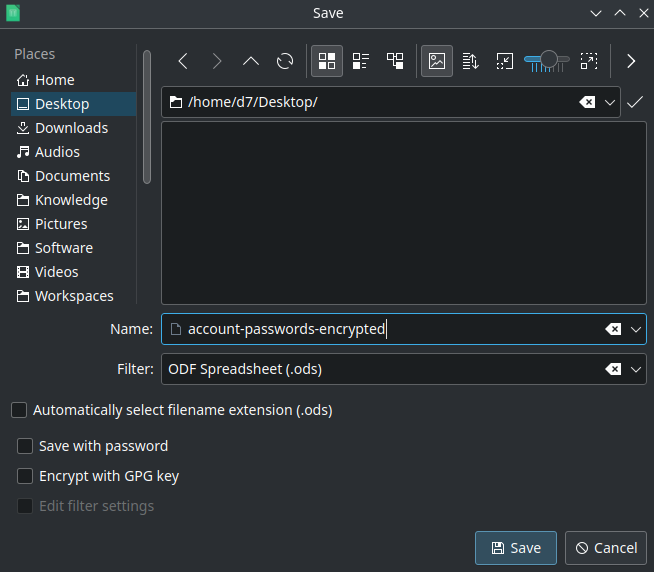

Configurar un administrador de contraseñas
Este es un artículo que explica cómo configurar un administrador de contraseñas de forma segura y privada.
No recomiendo usar aplicaciones web que se ejecutan en un servidor, porque alguien puede interceptar y descifrar sus datos y un cracker puede usar fallas de JS.
Estos métodos usan aplicaciones locales con un archivo encriptado, no se comparten datos a través de Internet. Sin embargo, si insiste en usar aplicaciones web en línea, debe usar Bitwarden o Vaultwarden (autohospedado Guardabits).
Hay dos formas de cifrar y organizar sus contraseñas en un solo archivo:
1. Use un archivo de hoja de cálculo encriptado
Utilice una hoja de cálculo con estos formatos de archivo:
- ODS (Open Document Spreadsheet), compatible con Libre Office, Collabora Office, Only Office, Open Office
- XLS (hoja de cálculo de Microsoft Excel), compatible con Microsoft Office Excel, hoja de cálculo WPS
XLS u ODS le permite guardar su contraseña y cuentas como una hoja de cálculo en un archivo encriptado con una contraseña elegida.
Para hacer esto, debe instalar una suite de Office, abrir la aplicación de hoja de cálculo y “Guardar como” con contraseña.
En Libre Office Calc: “Archivo -> Guardar como (Ctrl+Shift+S) y seleccione “Guardar con contraseña”. Para Microsoft Excel, es muy similar a XLS, pero más seguro.

Recomiendo usar Libre Office Calc, que es parte de la suite Libre Office, porque es FOSS (código abierto gratuito) y funciona en Windows, MacOS, Linux; y para abrir el archivo en el teléfono, solo use Collabora Office. Si desea utilizar XLS, puede utilizar MS Excel (de MS Office) o las alternativas gratuitas como WPS.
- Ventajas
- Un archivo encriptado en la unidad local
- Solo puede ingresar el principio y el final de la contraseña, es en texto claro.
- Puedes organizarlo a tu manera con:
- Columnas: correo electrónico, categoría, empresa, nombre de usuario, contraseña, notas
- Filas: como los valores.
- Desventajas.
- No hay opción para generar la contraseña automáticamente
- El archivo se puede descifrar con varios intentos y depende de la seguridad de la contraseña.
- No hay opción para ocultar la contraseña.
- Sin sincronización
2. Usar el archivo KeePass (kdbx)
KeePass es un administrador de contraseñas gratuito de código abierto para Windows, donde puede almacenar nombres de usuario, contraseñas, otros campos, notas de formato libre y archivos adjuntos en un archivo cifrado.
Es similar a la versión anterior pero el software está diseñado para guardar la información de la cuenta (usuario, contraseñas, correo, etc.) en lugar de una tabla en una hoja de cálculo.
Para Windows solo descarga desde la página oficial: https://keepass.info/download.html
Para el escritorio de Unix, debe instalar las dependencias: libgdiplus y mono framework
- Para ArchLinux: https://archlinux.org/packages/extra/any/keepass/
- Para Debian: https://packages.debian.org/bullseye/keepass2
- Para Fedora: https://packages.fedoraproject.org/pkgs/keepass/keepass/
- Para Gentoo: https://packages.gentoo.org/packages/app-admin/keepass
- Para OpenSUSE: https://software.opensuse.org/package/keepass
- Para FreeBSD: https://www.freshports.org/security/keepass/
Otra aplicación compatible con KeePass
Debido al gran auge de KeePass existen aplicaciones nativas de KeePass compatibles.
-
Multiplataforma:
- KeePassXC: https://keepassxc.org/
- KeeWeb: https://github.com/keeweb/keeweb/releases/
-
Para macOS:
-
Para móvil:
- Para Android:
- KeePassDX: https://www.keepassdx.com/
- KeePass2Android: https://github.com/PhilippC/keepass2android/releases
- Para iOS:
- KeePassium: https://keepassium.com
- Caja Fuerte: https://strongboxsafe.com/
- Para Android:
-
Ventajas
-
Un archivo encriptado en local
-
Puedes poner una contraseña falsa como inicial y final de contraseña (P…d)
-
Clasificar por (carpetas, etiquetas) con datos de cuentas (usuario, contraseña, correo, etc)
-
Opción para ocultar contraseñas
-
Contras.
-
No hay opción para autogenerar contraseña
-
El archivo se puede descifrar con varios intentos y depende de la seguridad de la contraseña.
-
No hay opción para ocultar la contraseña
- No sincronizado
Conclusión
Estos son los métodos sencillos que he encontrado para gestionar tus contraseñas de forma segura y privada. Uso un archivo cifrado ODS con Libre Office Calc en Arch Linux y Collabora Office en Android, pero migraré las contraseñas a KeePassXC en Arch y KeePassDX en Android.
Si deseas sincronizar el archivo cifrado desde diferentes dispositivos, puedes hacerlo manualmente mediante un cable USB o a través de una red (intranet o internet), pero prefiero no compartir los datos a través de una red.
Y una cosa que debes recordar es tu contraseña maestra, para eso puedes crear un archivo (audio, imagen, texto, video) que te recuerde esta contraseña. En mi caso, solo uso un logotipo encriptado que solo yo puedo entender.
También podrías crear tu propio lenguaje encriptado para almacenar contraseñas, pero eso requiere más esfuerzo. En el pasado, las personas encriptaban cosas dibujando símbolos y formas que solo las personas cultas podían entender.